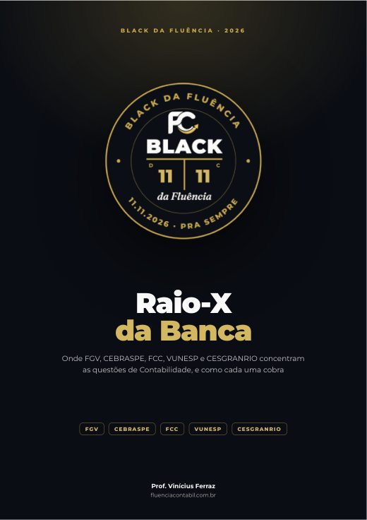
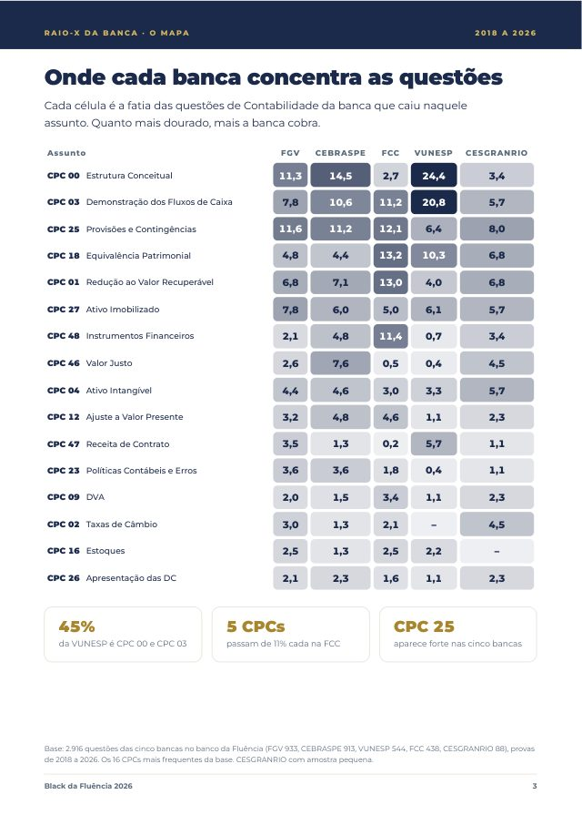
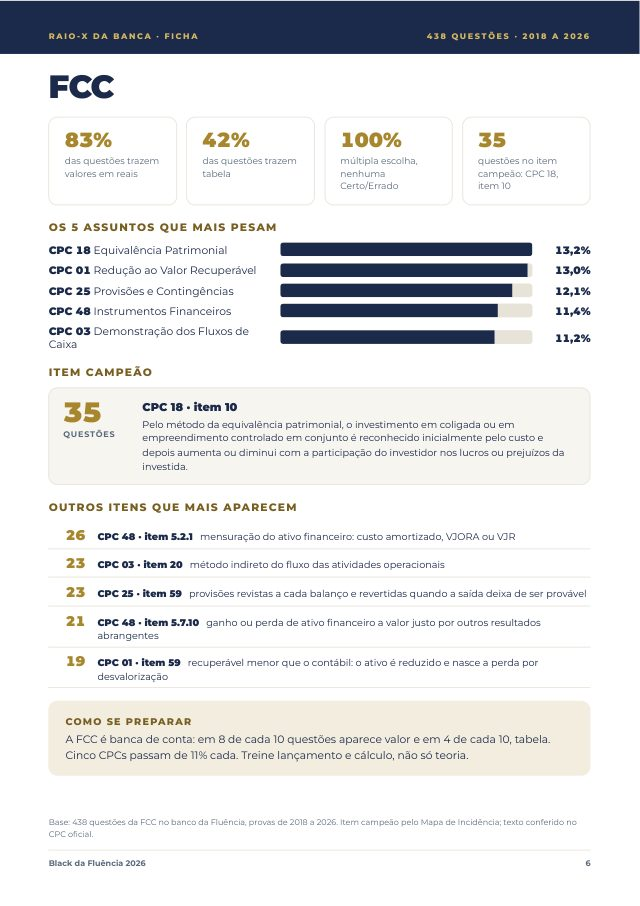
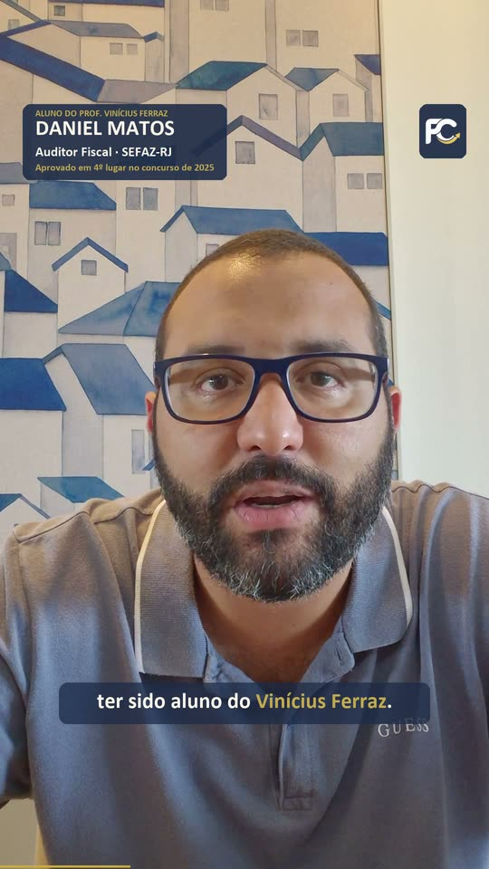
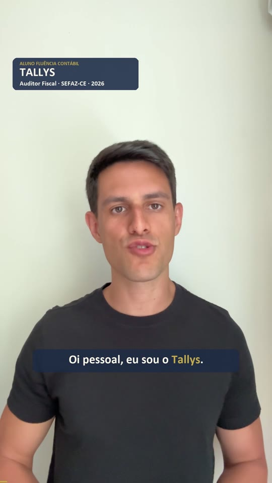

1
O link 10 minutos antes
Às 19h50 de 25/11, o link da live chega no seu e-mail e no grupo, antes do aviso para todo mundo.
Entra agora: a condição da Black da Fluência é revelada durante a transmissão e vale até 23h59 de hoje.
É a condição que eu revelei na live: acesso vitalício à assinatura de Contabilidade, com os bônus da Black. Vale só até 23h59 de hoje.
A condição da live foi prorrogada até hoje, 26/11, ao meio-dia. Depois disso, a vitalícia volta a R$ 814,80.
Já pagou um plano da Fluência? O que você pagou vira cashback e abate na vitalícia. Veja o seu valor na plataforma.
Ver meu cashbackVitalícia é o acesso enquanto a plataforma existir, nos termos do Aditivo de Acesso Vitalício. Garantia de 7 dias. Pagamento por cartão, Pix ou boleto na Kiwify.
É o acesso à assinatura de Contabilidade enquanto a plataforma existir, sem renovação. As regras estão no Aditivo de Acesso Vitalício.
Em 26 e 27/11 a Black continua com duas condições: 12 meses por R$ 517 ou a vitalícia por R$ 814,80. Os R$ 537 da vitalícia são só desta noite.
Do meio-dia de hoje até 27/11, às 23h59, a Black continua com duas condições: 12 meses por R$ 517 ou a vitalícia por R$ 814,80. Os R$ 537 da vitalícia valem só até o meio-dia de hoje, 26/11.
Não. Os Fundadores já são vitalícios, sem pagar nada. Está na sua página "Minha vitalícia".
Não o valor inteiro: o que você pagou vira cashback e abate na vitalícia. O valor exato aparece em "Minha vitalícia", na plataforma.
Escolha como quer estudar: 12 meses de acesso, ou a vitalícia, que sai do ar quando a Black terminar.
Já pagou um plano da Fluência? Até 27/11, o que você pagou vira cashback e abate na vitalícia. Veja o seu valor na plataforma.
Ver meu cashbackVitalícia nos termos do Aditivo de Acesso Vitalício. Garantia de 7 dias. Pagamento por cartão, Pix ou boleto na Kiwify.
Os 12 meses dão um ano de acesso; depois, você renova pelo preço do momento. A vitalícia não tem renovação: o acesso vale enquanto a plataforma existir.
Valeu na noite da live de 25/11 e foi prorrogada até 26/11, ao meio-dia.
Não. Em 26 e 27/11 ficam só os 12 meses e a vitalícia.
Não o valor inteiro: o que você pagou vira cashback e abate na vitalícia, até 27/11. O valor aparece em "Minha vitalícia".
A vitalícia saiu do ar. A assinatura de Contabilidade continua aberta, com os planos de sempre.
Em 25 de novembro, às 20h, ao vivo, a maior condição que a Fluência já fez volta por uma noite. Quem está na lista VIP recebe o link 10 minutos antes de todo mundo e fica sabendo primeiro quando a condição abrir.
A live de 25/11 já começou.
Deixe seus dados e receba na hora o Raio-X da Banca, e o link da live antes de todo mundo.

Bônus da inscriçãoRaio-X da Banca: o que FGV, CEBRASPE, FCC, VUNESP e CESGRANRIO mais cobram em Contabilidade. PDF de 9 páginas.
Pronto! Você está na lista VIP.
Em 25/11, às 19h50, o link da live chega no seu e-mail, 10 minutos antes do aviso geral.
Onde FGV, CEBRASPE, FCC, VUNESP e CESGRANRIO concentram as questões de Contabilidade, e como cada uma cobra. Feito com as 2.916 questões dessas cinco bancas que estão no banco da Fluência, de provas de 2018 a 2026, cada uma ligada ao item da norma que cobra.


A condição de 25/11 vale por uma noite. A lista VIP existe para você não depender de ver um story na hora certa.
Às 19h50 de 25/11, o link da live chega no seu e-mail e no grupo, antes do aviso para todo mundo.
Quando a condição abrir, durante a live, quem está no grupo VIP fica sabendo na hora.
No grupo VIP do WhatsApp chegam os avisos da Black, e você tira as suas dúvidas sobre a condição e a plataforma com a equipe.

“A minha jornada como concurseiro foi uma antes de eu conhecer o Vinícius e outra depois.”Daniel Matos · Auditor Fiscal da SEFAZ-RJ, 4º lugar
“Comecei a achar contabilidade fácil e comecei a perder o medo de estudar aquele monte de CPC.”Antônio Sombra · Auditor do TCU
“Era um CPC que eu não conseguia entender em nenhuma outra aula, e eu só consegui aprender com ele.”Jorge Henriques · Auditor Fiscal do Rio de Janeiro, 2º lugar
“O professor já faz questão de te explicar os conceitos lá dos CPCs. Isso te dá fluência na matéria desde o começo.”Ransley Moreira Alves · 1º lugar na lista PcD, Senador Canedo (GO)

“Direta, sem enrolação e focada naquilo que realmente cai na prova.”Tallys · aprovado em Auditor Fiscal, 2026
Os depoimentos abaixo são falas reais, com o canal em que chegaram: plataforma, WhatsApp, Instagram e YouTube. Onde a pessoa não autorizou o nome, aparece como Aluno(a).
Gravações da plataforma como ela está hoje. Escolha a ferramenta.
Em poucos minutos você entende por que a Fluência ensina Contabilidade como um idioma, pela lógica, e não pela memorização.
A aula de quarta segue normal no YouTube: questão de prova resolvida do zero, com a norma que sustenta o gabarito.
No seu e-mail e no grupo, 10 minutos antes do aviso geral.
A condição da Black da Fluência é revelada durante a transmissão.
A condição da noite vale até 23h59 de 25/11.

Auditor Fiscal do Município do Rio de Janeiro, aprovado como Analista Legislativo de Contabilidade do Senado Federal e como Auditor Fiscal do Estado de Minas Gerais. Fundador da Fluência Contábil, com mais de 3.000 alunos em 40 turmas.
Não. A lista é gratuita, e a live também: é aberta no YouTube.
Das 2.916 questões de Contabilidade de FGV, CEBRASPE, FCC, VUNESP e CESGRANRIO que estão no banco de questões da Fluência, de provas de 2018 a 2026, quase todas de CPC. Cada questão está ligada ao item da norma que ela cobra, e o texto de cada item foi conferido no CPC oficial. É um retrato do banco, não de todas as provas já aplicadas. A CESGRANRIO tem amostra pequena (88 questões): a ficha dela serve como direção, não como regra.
É a campanha de novembro da Fluência Contábil. A primeira live foi em 11/11; vocês pediram, e a Black volta na live de 25/11, às 20h. A condição da noite vale até 23h59 de 25/11, e o que é só da Black termina em 27/11.
Sim: a noite de 25/11 repete a condição da live de 11/11, e ela vale só até 23h59 de 25/11.
Não precisa estar na live para aproveitar: depois da transmissão, a condição chega no seu e-mail e vale até 23h59 de 25/11. Mas ao vivo dá para perguntar o que quiser na hora.
Por e-mail, os avisos da Black até 27/11. No WhatsApp, no máximo 4 mensagens individuais, e o grupo VIP, com os avisos da Black e as dúvidas respondidas pela equipe. Você sai de qualquer um deles quando quiser.
Entre na lista VIP, receba o Raio-X da Banca na hora, o link antes de todo mundo e fique sabendo primeiro quando a condição abrir.
Entrar na lista VIP